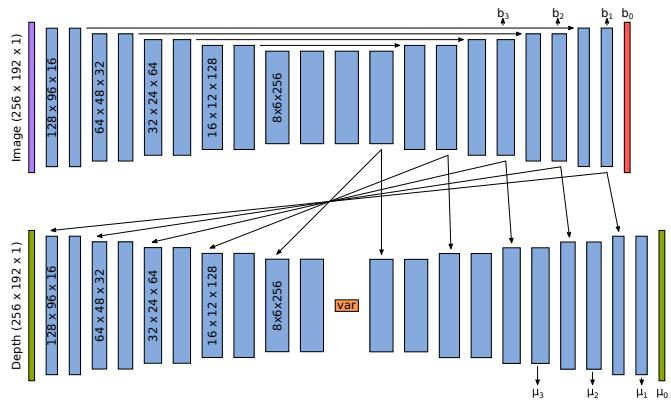
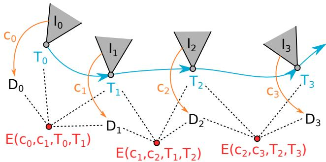

直接接 0054 CNN-SLAM：那一节借来深度，但原文自己承认「it is not possible to optimise the predicted depth maps further for consistency」，本节就是来补这个缺口的。理论上接 0019 / 0020：你们学过的 BA 是「对位姿和 3D 点求导」，这一节把「对深度图求导」变成可能——方法就是让深度成为少数几个参数的函数。工程上接 0021 g2o：H 的稀疏结构是图的结构；这里换成另一种「低维参数化」来让问题变得可解。
1. 这一节要回答什么
先把上一篇留下的问题复述清楚。滑块 SLAM（dense SLAM）想要一张完整的深度图——每个像素都有深度值，这样才能做遮挡判断、做 AR 的物理交互、做出好看的重建。但它有个根本困难：
「自然场景的几何并不是一团随机分布的占据与非占据空间，而是呈现出高度的秩序。」（原文：the geometry of natural scenes is not a random collection of occupied and unoccupied space but exhibits a high degree of order）
原图注（Fig. 2）：Depth auto-encoder without the use of image intensity data. Due to the bottleneck of the auto-encoder only major traits of the depth image can be captured.（不使用图像强度数据的深度自编码器。由于自编码器的瓶颈限制，只能捕捉深度图的主要特征。） 怎么看这张图：这是「没有图像条件」的反面教材。请盯住物体边缘——沙发轮廓、墙角、家具棱线都糊成了软边，因为只有几十上百个数要通过瓶颈，网络只能先保住大块的形状趋势。 要记住的一句话：朴素自编码器把「深度图的细节」也一起当成了必须用 code 表达的信息——这是不必要的，因为细节其实已经写在图像里了。
「我们不需要编码完整的深度信息，只需要保留那些无法从图像强度中恢复的部分。」（原文：We do not need to encode the full depth information, but only need to retain the part of the information which cannot be retrieved from the intensities.）
原文还有一句很漂亮的比喻：图像提供局部细节，code 提供更全局的形状参数（"the image providing local details and the code as supplying more global shape parameters"）。而且作者特意强调，这些「全局形状参数」不是人工设计的几何变换，而是学出来的、倾向于对应场景里的语义实体——用原文的话，这可以看作「a step towards enabling optimisation in general semantic space」。
原文还做了一个很有意思的观察（5.1 节）：把「深度对 code 各维的偏导」画出来后发现，code 的每一项似乎对应图像上的特定区域，而且在某种程度上尊重图像给出的边界。原文也老实承认这些区域「seem to be slightly fragmented」（略显破碎），并提醒最终的还原「always be a linear combination of the effect of all code entries」——是全部项合起来起作用的，不能孤立地读某一维。
原图注（Fig. 5）：Validation loss during training on the per-pixel proximity errors. As the reference implementation, we use a network trained on greyscale images with a linear decoder. Lower losses can be achieved by increasing the code size (increasing shades of grey). Using a nonlinear decoder or colour images during training does not affect the results in a significant way.（训练过程中逐像素 proximity 误差的验证损失。参考实现使用灰度图像训练、配线性解码器。增大 code 尺寸（灰度越深）能得到更低的损失。使用非线性解码器或用彩色图像训练，都不会显著影响结果。） 怎么看这张图：横轴是 code 尺寸，纵轴是误差。要看的是曲线什么时候变平——原文的结论是「在 code size 128 处精度饱和，再增大收益极少」；同时原文还报告了两个「反预期」的结果：用彩色图像、用非线性解码器，都没有显著改善精度。也就是说决定性能的关键不是这三件事，而是那个瓶颈里到底装了多少「图像猜不出来的信息」。 要记住的一句话：128 维就够描述一张深度图的「全局形状」——因为细节已经交给图像了。

原图注（Fig. 3）：Network architecture of the variational depth autoencoder conditioned on image intensities. We use a U-Net to decompose the intensity image into convolutional features (the upper part of the figure). These features are then fed into the depth autoencoder by concatenating them after the corresponding convolutions (denoted by arrows). Down-sampling is achieved by varying stride of the convolutions, while up-sampling uses bilinear interpolation (except for the last layer which uses a deconvolution). A variational component in the bottleneck of the depth auto-encoder is composed of two fully connected layers (512 output channels each) followed by the computation of the mean and variance, from which the latent space is then sampled. The network outputs the predicted mean μ and uncertainty b of the depth on four pyramid levels.（基于图像强度条件的变分深度自编码器网络结构。用 U-Net 把强度图像分解为卷积特征（图的上半部分）。这些特征通过与对应卷积层之后的拼接喂入深度自编码器（用箭头表示）。下采样通过改变卷积步长实现，上采样使用双线性插值（最后一层除外，它使用反卷积）。深度自编码器瓶颈处的变分组件由两个全连接层（各 512 个输出通道）构成，随后计算均值与方差，并从中采样出潜在空间。网络在四个金字塔层级上输出深度预测的均值 μ 与不确定度 b。） 怎么看这张图：顺着箭头找三条路径：① 上方横向走的是图像特征流；② 下方漏斗状走的是深度自编码器（收窄的地方就是瓶颈）；③ 一堆向下的短箭头是条件化拼接——把图像特征接进自编码器对应分辨率的层。另外注意原文的说明「网络输出的是每个深度像素的均值 μ 和不确定度 b」——不是直接输出深度值，这个设计下面还会讲到。顺便请留意原文在此处埋的一个工程细节：为了让雅可比能预先算好，深度解码器里刻意不用非线性激活。 要记住的一句话：两条流在每一层分辨率上拼一次，图像负责细节、code 负责全局形状。
原文特意指出这个参数化「differentiable and better relates to the actual observable quantity」，并明确说它参照了逆深度参数化。这条线索其实一直在第三季里出现：0046 DTAM 用逆深度是因为「在逆深度上均匀采样等于在极线上均匀采样」，0047 LSD-SLAM 的深度分布也是建在逆深度坐标上，本节又是同一族思想——因为可观测的是视差，而视差和逆深度成正比。
6. 它怎么进 SLAM：三个环节
有了「深度 = 图像 + 一小串数」这个表示，剩下的就是把经典的 SLAM 套路接上去。

原图注（Fig. 4）：Illustration of the SfM system. The image $\mathrm{I}_i$ and corresponding code $\mathbf{c}_i$ in each frame are used to estimate the depth $\mathrm{D}_i$. Given estimated poses $\mathbf{T}_i$, we derive relative error terms between the frames (photometric and geometric). We then jointly optimise for geometry ($\mathbf{c}_i$) and motion ($\mathbf{T}_i$) by using a standard second-order method.（SfM 系统示意。每一帧的图像 $\mathrm{I}_i$ 与对应的 code $\mathbf{c}_i$ 用来估计深度 $\mathrm{D}_i$。给定估计的位姿 $\mathbf{T}_i$，我们在帧之间导出相对误差项（光度项与几何项）。然后用标准二阶方法联合优化几何（$\mathbf{c}_i$）与运动（$\mathbf{T}_i$）。） 怎么看这张图：这张图就是本节的「总装图」，最该看的是最后那句话里的 jointly——优化变量框里同时有 $\mathbf{c}_i$ 和 $\mathbf{T}_i$，两者一起被调。这正是第 1 节说的「把稠密方法丢掉的联合推断能力拿回来」在工程上的样子。另外请对照第二季 0020 GraphSLAM 教程里那张节点—边图：图的骨架一模一样，只是节点里装的东西从「位姿+路标」换成了「位姿+code」。 要记住的一句话：同一套因子图、同一套高斯牛顿，换掉的是「地图怎么被参数化」。
这一条很重要，也很容易被忽略。原文在 EuRoC 的 MH_02_easy 上跑滑动窗口视觉里程计，报告「9 米行程上大约 1 米误差」，然后自己加了一句很克制的话：「这无法与最先进的视觉惯性系统相比，但对一个纯视觉系统而言表现尚可」（原文：While this cannot compete with a state-of-the art visual-inertial system, it performs respectably for a vision only system）。它还特别声明没有使用可用的 IMU 数据。全文没有和 ORB-SLAM、LSD-SLAM、CNN-SLAM 中的任何一个做数字对比——它是一篇"概念验证"性质的论文。读到这种论文，要清楚它想证明的是「这个表示可行、可优化」，不是「我的系统最强」。
② 训练数据是纯合成数据，而失败模式正好暴露了这一点
网络在 SceneNet RGB-D 上训练——那是「photorealistic renderings of randomised indoor scenes」，也就是渲染出来的合成室内场景。最精彩的证据是原文 5.2 节对 Fig. 10 的说明：过曝的图像区域「saturate to infinite depth values」，而其原因是训练集里有大量带窗户的场景。也就是说，模型把「白花花一片」直接学成了「无穷远」，因为它见过的白花花一片都是窗户外面。这是「训练分布决定失败模式」的一个教科书级例子——它恰好也预告了下一节的思路：不能只靠网络猜，得让优化去纠。
③ 它自认是「初步系统」，而且明确列了未来工作
原文 4.3 节自称「a preliminary system」，结论里列了三条后续：建完整的实时关键帧 SLAM 系统、把训练扩展到真实数据（也可以只用强度信息做自监督）、以及把这种「可优化的紧凑表示」推广到一般 3D 几何、最终接到 3D 物体识别上。它还顺手提了一个工程短板：系统目前靠 TensorFlow 做图像 warp，换成专用实现还能再快。这些自我诊断，正好就是三年后 DeepFactors 要交付的东西。
④ 上手成本：训练配置也得看清
ADAM 优化器，初始学习率 $10^{-4}$，训 6 个 epoch，学习率降到 $10^{-6}$。深度值先通过 proximity 变换到 $[0,1]$。这个规模不算大，说明真正的门槛不在算力，而在「要有一批带深度真值的室内图像」。
本节小结：这篇给 SLAM 与深度学习重新分了工
如果只能记住一句话，我建议记住这个分工安排：神经网络不用来直接输出答案，而是用来提供一个「可优化的低维流形」。原文对这一点有一个很清醒的说法：他们认为自己的方法「relies less on the network generalisation」，因为后续的优化允许修正网络的坏预测；网络的主要作用只是「obtaining an image conditioned manifold to optimise over」（提供一个以图像为条件的、可供优化的流形）。
这个分工有个很实在的好处：它把「网络准不准」从生死问题降级成了「初值好不好」的问题。而这也直接呼应了第一季 0010 与 0011 讲过的结论——深度学习在 SLAM 里最稳的位置，不是替换整个系统，而是给经典优化提供更好的先验。下一节 0056 DeepFactors 就是把这个分工推向完整的实时系统。
原文紧接着说：「这无法与最先进的视觉惯性系统相比，但对纯视觉系统而言表现尚可」（While this cannot compete with a state-of-the art visual-inertial system, it performs respectably for a vision only system），并且明确声明没有使用数据集中可用的 IMU 数据。
但最终的深度图是全部 code 项影响的线性组合（原文原话：the final reconstructions will always be a linear combination of the effect of all code entries）。所以「某一维主要管某块区域」是一个统计倾向，不是「这一维 = 这块区域的深度」这样的一一对应。读的时候要当成「责任分工的倾向」，而不是「查表」。